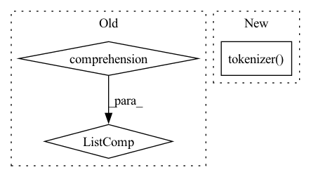

Pattern ID :15908

Before Change
attn_mask.append(encodings_dict["attention_mask"])
max_length = max([len(idx) for idx in text_idx])
text_idx = [idx + [self.padding_token_idx] * (max_length - len(idx)) for idx in text_idx]
attn_mask = [mask + [0] * (max_length - len(mask)) for mask in attn_mask]
text_idx = torch.LongTensor(text_idx).to(self.device)
attn_mask = torch.LongTensor(attn_mask).to(self.device)
input_text = text_idx[:, :-1]
After Change
attn_masks = []
for text in text_sequence:
sentence = " ".join([self.sos_token] + text + [self.eos_token])
encoding_dict = self.tokenizer(sentence,
max_length=self.max_seq_length,
padding="max_length",
truncation=True,
return_tensors="pt")
input_ids.append(encoding_dict["input_ids"])
attn_masks.append(encoding_dict["attention_mask"])
input_ids = torch.cat(input_ids, dim=0).to(self.device)
attn_masks = torch.cat(attn_masks, dim=0).to(self.device)
In pattern: SUPERPATTERN
Frequency: 3
Non-data size: 3
Instances
Fragment ID: 53683522
Project Name: rucaibox/textbox
Commit Name: 9c7994602989cced6709bf6ec43a092f69a1d6cd
Time: 2020-12-08
Author: lijunyi@ruc.edu.cn
File Name: textbox/model/LM/gpt2.py
M Class Name: GPT2
N Class Name: GPT2
M Method Name: calculate_loss(3)
N Method Name: calculate_loss(3)
M Parent Class: UnconditionalGenerator
N Parent Class: UnconditionalGenerator
M File Name: textbox/model/LM/gpt2.py
N File Name: textbox/model/LM/gpt2.py
M Start Line: 67
M End Line: 91
N Start Line: 72
N End Line: 95
'>
Before Change
text_idx.append(encodings_dict["input_ids"])
attn_mask.append(encodings_dict["attention_mask"])
max_length = max([len(idx) for idx in text_idx])
text_idx = [idx + [self.padding_token_idx] * (max_length - len(idx)) for idx in text_idx]
attn_mask = [mask + [0] * (max_length - len(mask)) for mask in attn_mask]
text_idx = torch.LongTensor(text_idx).to(self.device)
attn_mask = torch.LongTensor(attn_mask).to(self.device)
After Change
attn_masks = []
for text in text_sequence:
sentence = " ".join([self.sos_token] + text + [self.eos_token])
encodings_dict = self.tokenizer(sentence,
max_length=self.max_seq_length,
padding="max_length",
truncation=True,
return_tensors="pt")
input_ids.append(encodings_dict["input_ids"])
attn_masks.append(encodings_dict["attention_mask"])
input_ids = torch.cat(input_ids, dim=0).to(self.device)
attn_masks = torch.cat(attn_masks, dim=0).to(self.device)
'>
Fragment ID: 53683520
Project Name: rucaibox/textbox
Commit Name: 9c7994602989cced6709bf6ec43a092f69a1d6cd
Time: 2020-12-08
Author: lijunyi@ruc.edu.cn
File Name: textbox/model/LM/gpt2.py
M Class Name: GPT2
N Class Name: GPT2
M Method Name: calculate_nll_test(3)
N Method Name: calculate_nll_test(3)
M Parent Class: UnconditionalGenerator
N Parent Class: UnconditionalGenerator
M File Name: textbox/model/LM/gpt2.py
N File Name: textbox/model/LM/gpt2.py
M Start Line: 97
M End Line: 118
N Start Line: 104
N End Line: 124
'>
Before Change
def generate(self, eval_dataloader):
generate_corpus = []
for batch_data in eval_dataloader:
source_text_list = [" ".join(token_list) for token_list in batch_data["source_text"]]
sample_outputs = self.decoder.generate(
source_text_list,
num_beams=4,
max_length=self.max_target_length,
After Change
source_text = batch_data["source_text"]
for text in source_text:
sentence = " ".join(text)
encoding_dict = self.tokenizer(sentence, return_tensors="pt")
input_ids = encoding_dict["input_ids"].to(self.device)
sample_outputs = self.decoder.generate(input_ids,
num_beams=4,
max_length=self.max_target_length,
'>
Fragment ID: 53683527
Project Name: rucaibox/textbox
Commit Name: 98f1b699c360e68b85477e671450399a5f68eca4
Time: 2020-12-09
Author: lijunyi@ruc.edu.cn
File Name: textbox/model/Seq2Seq/bart.py
M Class Name: BART
N Class Name: BART
M Method Name: generate(2)
N Method Name: generate(2)
M Parent Class: ConditionalGenerator
N Parent Class: ConditionalGenerator
M File Name: textbox/model/Seq2Seq/bart.py
N File Name: textbox/model/Seq2Seq/bart.py
M Start Line: 46
M End Line: 57
N Start Line: 46
N End Line: 61